NIRVANA
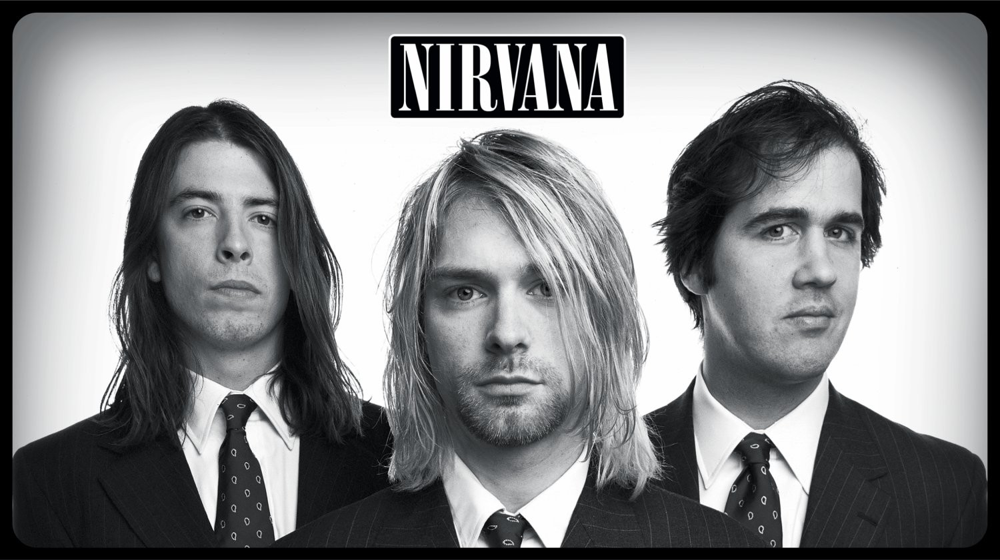 Nirvana was an American rock band formed in Aberdeen, Washington, in 1987. It was founded by lead singer and guitarist Kurt Cobain and bassist Krist Novoselic. Nirvana went through a succession of drummers, the longest-lasting and best-known being Dave Grohl, who joined in 1990. Though the band dissolved in 1994 after the death of Cobain, their music maintains a popular following and continues to influence modern rock and roll culture. Nirvana found unexpected worldwide success with "Smells Like Teen Spirit", the first single from the band's second album Nevermind (1991), which has now been ranked as one of the greatest songs in the history of rock music. Nevermind has also been called one of the greatest albums of all time and has sold over 30 million copies worldwide. Nirvana's sudden success widely popularized alternative rock and grunge, and Cobain found himself referred to in the media as the "spokesman of a generation", with Nirvana considered the "flagship band" of Generation X.
Bleach
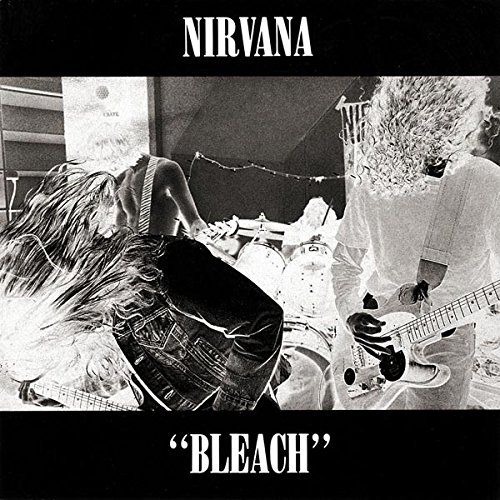- Blew
- Floyd the Barber
- About a Girl
- School
- Love Buzz
- Paper Cuts
- Negative Creep
- Scoff
- Swap Meet
- Mr.Moustache
- Sifting
Nevermind

- Polly
- Breed
- Territorial Pissings
- Drain You
- Smells Like Teen Spirit
- Come as You Are
- Lithium
- In Bloom
- Lounge Act
- Stay Away
- On a Plain
- Something in the way
In Utero

- Serve the Servants
- Scentless Apprentice
- Heart-Shaped Box
- Rape Me
- Dumb
- Very Ape
- Milk It
- Pennyroyal Tea
- tourette's
- Radio Friendly Unit Shifter
- All Apologies
ALICE IN CHAINS
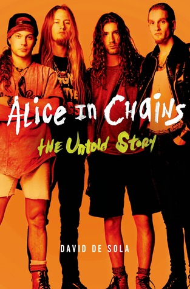 Alice in Chains is an American rock band from Seattle, Washington, formed in 1987 by guitarist and vocalist Jerry Cantrell and drummer Sean Kinney, who later recruited bassist Mike Starr and lead vocalist Layne Staley. Starr was replaced by Mike Inez in 1993. William DuVall joined the band in 2006 as co-lead vocalist and rhythm guitarist, replacing Staley, who died in 2002. The band took its name from Staley's previous group, the glam metal band Alice N' Chains. Alice in Chains rose to international fame as part of the grunge movement of the early 1990s, along with other Seattle bands such as Nirvana, Pearl Jam, and Soundgarden. The band was one of the most successful music acts of the 1990s, selling over 30 million records worldwide, and over 14 million records in the US alone, with two No. 1 albums and six Top 10 albums on the Billboard 200 chart.
Facelift

- We Die Young
- Man in the Box
- Sea of Sorrow
- Bleed the Freak
- I Can't Remember
- Love, Hate, Love
- It Ain't Like That
- Sunshine
- Put You Down
- Confusion
- I Know Somethin
- Real Thing
Dirt
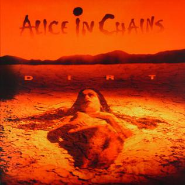- Them Bones
- Dam That River
- Rain When I Die
- Down in a Hole
- Sickman
- Rooster
- Junkhead
- Dirt
- God Smack
- Iron Gland
- Hate to Feel
- Angry Chair
- Would?
Alice in Chains
.jpg)
- Grind
- Brush Away
- Sludge Factory
- Heaven Beside You
- Head Creeps
- Again
- Shame in You
- God Am
- So Close
- Nothin' Song
- Frogs
- Over Now
Black Gives Way to Blue
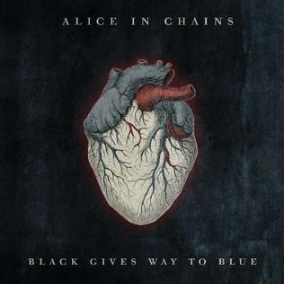- All Secrets Known
- Check My Brain
- Last of My Kind
- Your Decision
- A Looking in View
- When the Sun Rose Again
- Acid Bubble
- Lesson Learned
- Take Her Out
- Private Hell
- Black Gives Way to Blue
The Devil Put Dinosaurs Here
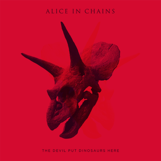- Hollow
- Pretty Done
- Stone
- Voices
- the Devil Put Dinosaurs Here
- Lab Monkey
- Low Ceiling
- Breathe on a Window
- Scalpel
- Phantom Limb
- Hung on a Hook
- Choke
Rainier Fog
- The One You Know
- Rainier Fog
- Red Giant
- Fly
- Drone
- Deaf Ears Blind Eyes
- Maybe
- So Far Under
- Never Fade
- All I Am
SOUNDGARDEN
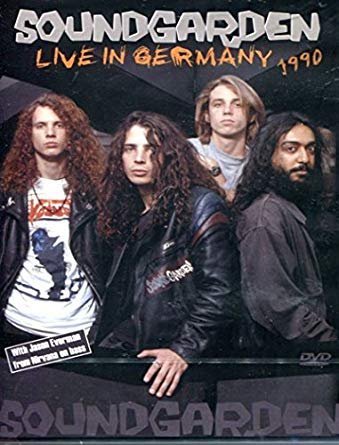 Soundgarden's origins began with a band called the Shemps, which performed around Seattle in the early 1980s, and featured bassist Hiro Yamamoto and drummer and singer Chris Cornell. Following Yamamoto's departure, the band recruited guitarist Kim Thayil as its new bassist. Thayil moved to Seattle from Park Forest, Illinois, with Yamamoto and Bruce Pavitt, who would later start the independent record label Sub Pop. Cornell and Yamamoto stayed in contact, and after the Shemps broke up Cornell and Yamamoto started jamming together, and were eventually joined by Thayil. oundgarden formed in 1984 and included Cornell (drums and vocals), Yamamoto (bass), and Thayil (guitar). The band named themselves after a wind-channeling pipe sculpture titled A Sound Garden, on National Oceanic and Atmospheric Administration property at 7600 Sand Point Way, next to Magnuson Park in Seattle. Cornell originally played drums while singing, but in 1985 the band enlisted Scott Sundquist to allow Cornell to concentrate on vocals. The band traveled around playing various concerts with this lineup for about a year.
Ultramega OK
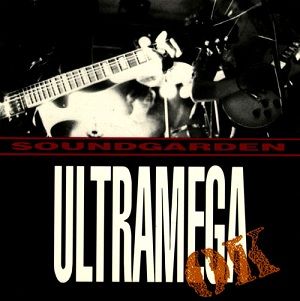- Flower
- All Your Lies
- 665
- Beyond The Wheel
- 667
- Mood For Trouble
- Circle Of Power
- He Didn't
- Smokestack Lightning
- Nazi Driver
- Head Injury
- Incessant Mace
- One Minute of Silence
Louder Than Love
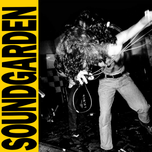- Ugly Truth
- Hands All Over
- Gun
- Power Trip
- Get on the Snake
- Full On Kevin's Mom
- Loud Love
- I Awake
- No Wrong No Right
- Uncovered
- Big Dumb Sex
- Full On (Reprise)
Badmotorfinger

- Rusty Cage
- Outshined
- Slaves and Bulldozers
- Jesus Christ Pose
- Face Pollution
- Somewhere
- Searching with My Good Eye Closed
- Room a Thousand Years Wide
- Mind Riot
- Drawing Flies
- Holy Water
- New Damage
Superunknown
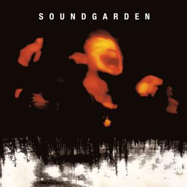- Let Me Drown
- My Wave
- Fell on Black Days
- Mailman
- Superunknown
- Head Down
- Black Hole Sun
- Spoonman
- Limo Wreck
- Kickstand
- Fresh Tendrils
- 4th of July
- Half
- Like Suicide
Down on the Upside
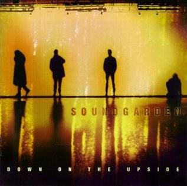- Pretty Noose
- Rhinosaur
- Zero Chance
- Dusty
- Ty Cobb
- Blow Up the Outside World
- Burden in My Hand
- Never Named
- Applebite
- Never the Machine Forever
- Tighter & Tighter
- No Attention
- Switch Opens
King Animal
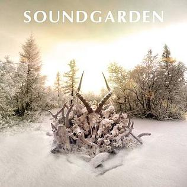- Been Away Too Long
- Non-State Actor
- By Crooked Steps
- A Thousand Days Before
- Blood On The Valley Floor
- Bones of Birds
- Taree
- Attrition
- Black Saturday
- Halfway There
- Worse Dreams
- Eyelid's Mouth
- Rowing
Foo Fighters
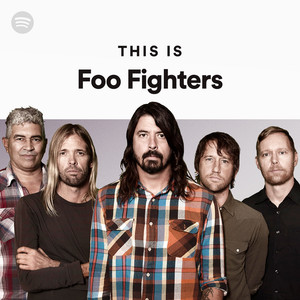 Foo Fighters is an American rock band, formed in Seattle, Washington, in 1994. It was founded by Nirvana drummer Dave Grohl as a one-man project following the dissolution of Nirvana after the suicide of Kurt Cobain. The group got its name from the UFOs and various aerial phenomena that were reported by Allied aircraft pilots in World War II, which were known collectively as "foo fighters". Foo Fighters frontman Dave Grohl joined the grunge group Nirvana as its drummer in 1990. During tours, he took a guitar with him and wrote songs. Grohl held back these songs from the rest of the band; he said in 1997, "I was in awe of [frontman Kurt Cobain's songs], and [I was] intimidated. I thought it was best that I kept my songs to myself." Grohl occasionally booked studio time to record demos and covers of songs he liked and even issued a cassette of some of those songs called Pocketwatch under the pseudonym "Late!" in 1992.
Foo Fighters

- This Is a Call
- I'll Stick Around
- Big Me
- Alone + Easy Target
- Good Grief
- Floaty
- Weenie Beenie
- Oh, George
- For All the Cows
- X-Static
- Wattershed
- Exhausted
The Colour and the Shape
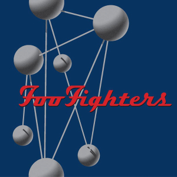- Doll
- Monkey Wrench
- Hey, Johnny Park!
- My Poor Brain
- Wind Up
- Up in Arms
- My Hero
- See You
- Enough Space
- February Stars
- Everlong
- Walking After You
- New Way Home
There Is Nothing Left to Lose

- Stacked Actors
- Breakout
- Learn to Fly
- Gimme Stitches
- Generator
- Aurora
- Live-In Skin
- Next Year
- Headwires
- Ain't It the Life
- M.I.A.
One by One

- All My Life
- Low
- Have It All
- Times Like These
- Disenchanted Lullaby
- Tired of You
- Halo
- Lonely as You
- Overdrive
- Burn Away
- Come Back
In Your Honor

- In Your Honor
- No Way Back
- Best of You
- DOA
- Hell
- The Last Song
- Free Me
- Resolve
- The Deepest Blues Are Black
- End Over End
Echoes, Silence, Patience & Grace
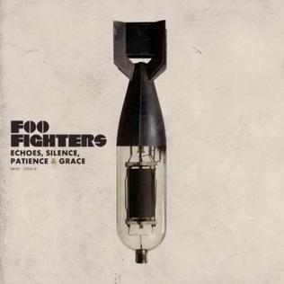- The Pretender
- Let It Die
- Erase / Replace
- Long Road to Ruin
- Come Alive
- Stranger Things Have Happened
- Cheer Up, Boys
- Summer's End
- The Ballad of the Beaconsfield Miners
- Statues
- But, Honestly
- Home
Wasting Light

- Bridge Burning
- Rope
- Dear Rosemary
- White Limo
- Arlandria
- These Days
- Back & Forth
- A Matter of Time
- Miss the Misery
- I Should Have Known
- Walk
Sonic Highways
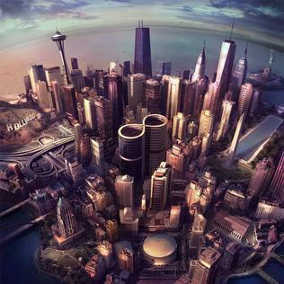- Something from Nothing
- The Feast and the Famine
- Congregation
- What Did I Do?
- Outside
- In The Clear
- Subterranean
- I Am A River
Concrete and Gold

- T-Shirt
- Run
- Make It Right
- The Sky Is a Neighborhood
- La Dee Da
- Dirty Water
- Arrows
- Happy Ever After
- Sunday Rain
- The Line
- Concrete and Gold